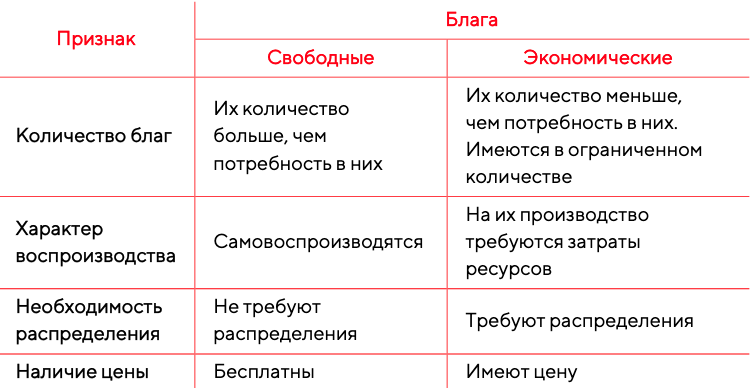

Экономические блага
Классификация благ в экономике
Каждый субъект экономики обладает своими особыми интересами.
Для удовлетворения потребностей могут использоваться доступные ресурсы, среди которых и всевозможные блага.
Блага › ресурсы, имеющие полезность и удовлетворяющие определенную потребность.
Благо › средство удовлетворения потребностей людей.
Важно, что в экономике термин «благо» не имеет морально-этической окраски. Разнообразие потребностей определяет и огромное разнообразие возможных благ.
Для экономики ключевое значение разделение всех благ на два типа: свободные и экономические.
Первый тип › свободные, или неэкономические. Это блага, которые природа дает в неограниченном количестве и которые есть в избытке по сравнению с потребностями общества. Например, солнечный свет, атмосферный воздух или вода из природных источников.
Второй тип › ограниченные, или экономические. Они производятся в процессе экономической деятельности с использованием некоторых ограниченных ресурсов. Поэтому они есть в ограниченном количестве. Например, это телефон, костюм или квартира.
Сравнительная характеристика разных видов благ отражена в таблице ниже:
В ряде случаев свободные блага могут вовслекаться в орбиту экономической деятельности, трансформируясь в экономические с учетом конкретных условий. Так, бутилированная вода из природных источников, отсортированные и упакованные дикорастущие грибы, ягоды и орехи — примеры экономических благ. Более того, свободные блага могут быть экономическими, когда их количество становится ограниченным, и для произодства требуются некие ресурсы. К примеру, вода в пустыне будет экономическим благом, как и за Полярным кругом, где она замерзает, и для ее добычи нужно тепло как ограниченный ресурс в условиях вечной мерзлоты. Пение птиц — это свободное благо в лесу и экономическое в центре большого города. Солнечный свет будет свободным благом днем, но экономическим благом — в темное время суток.
Объектом интереса экономики как хозяйства выступают именно экономические блага. В свою очередь, экономические блага могут быть воспроизводимыми, например, продукты питания и оборудование, или невоспроизводимыми, как картины известных художников и рукописи известных писателей.
Люди потребляют экономические блага в виде товаров и услуг.
Товары › объекты, как правило, материальные: хлеб, пальто, автомобиль, которые можно купить или продать за деньги.
Услуги › это действия, реализуемые отдельными лицами или группой лиц для обеспечения потребностей другого человека или группы лиц за вознаграждение.
Также существуют другие отличия.
-
1 Товар можно вернуть, в то время как услуга должны быть отменена.
-
2 Товар может быть произведен заранее, приобретен и потреблен позднее, тогда как услуги предоставляются по мере необходимости и потребляются одновременно с их оказанием.
-
3 Невозможно предугадать и оценить качество услуги до момента ее оказания.
Товары не всегда имеют вещественную форму. Встречаются и нематериальные товары — это иные блага, представляющие ценность: валюты, включая криптовалюты, и ценные бумаги — акции, облигации. Такие нематериальные товары выступают объектом сделок на финансовом рынке, и их спецификой считается частое варьирование их курса.
В последнее время информация, то есть определенные данные, также все чаще выступает востребованным и дорогостоящим продуктом. Отсюда и большой спектр цифровых товаров — продуктов, которые существуют исключительно в электронном формате: подписки, графика, музыкальный и видео-контент, онлайн-курсы, программное обеспечение, игры и внутренние игровые предметы. Цифровые товары распространяются в виде файла или ссылки на его скачивание. Их преимущество в следующем: они не создают проблем с доставкой потребителю, не имеют остатков и ограничений на количество копий, которые можно продать.
Продукция › все товары и услуги.